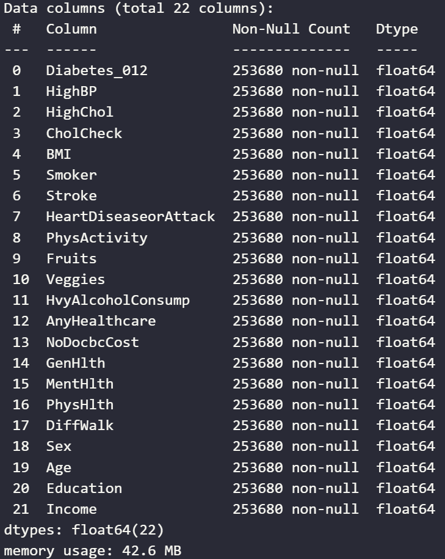
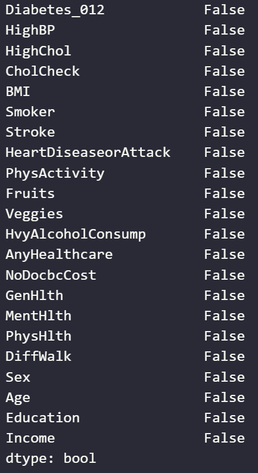
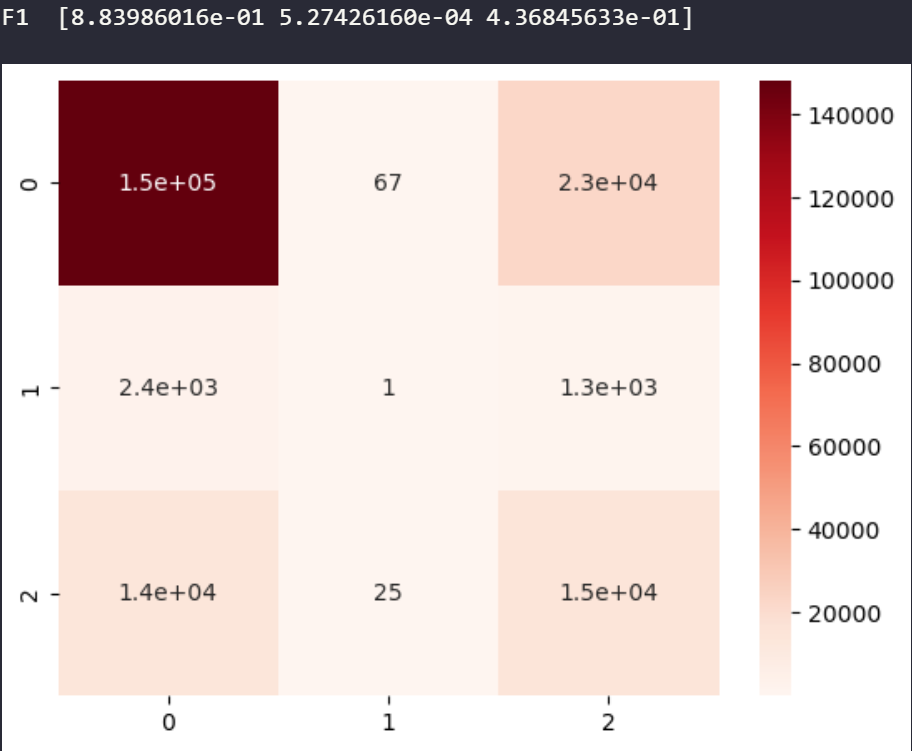
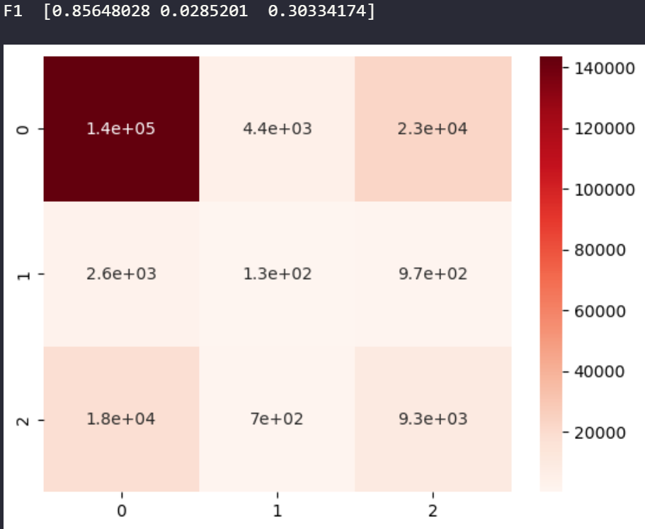
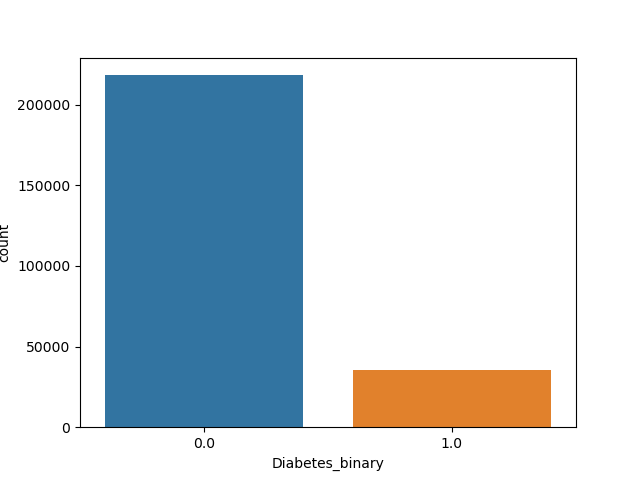
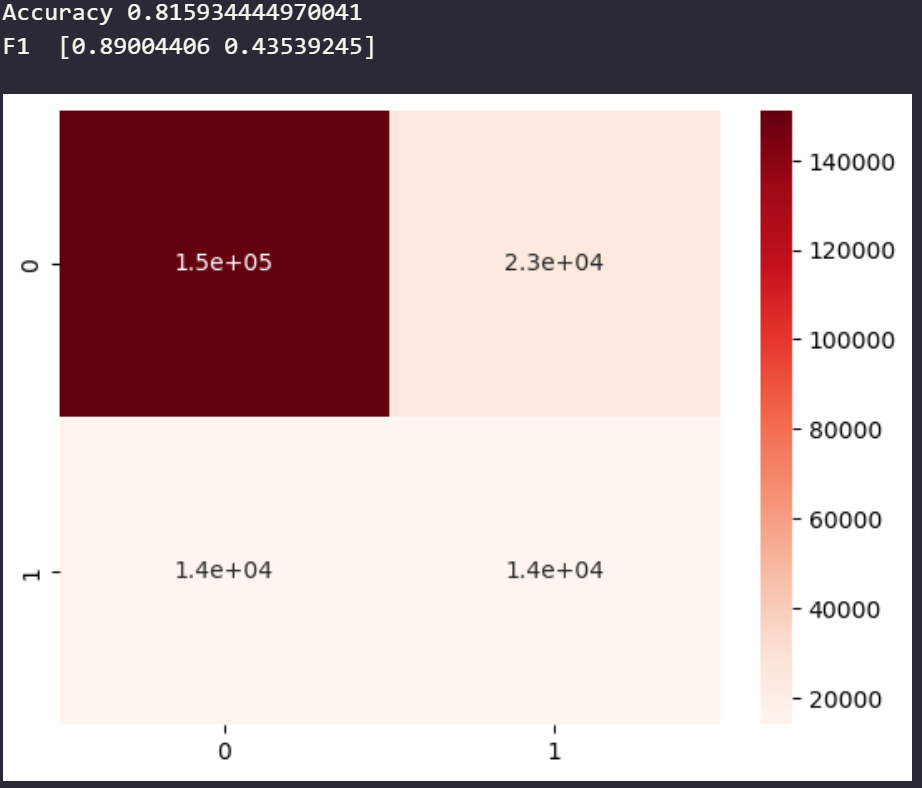
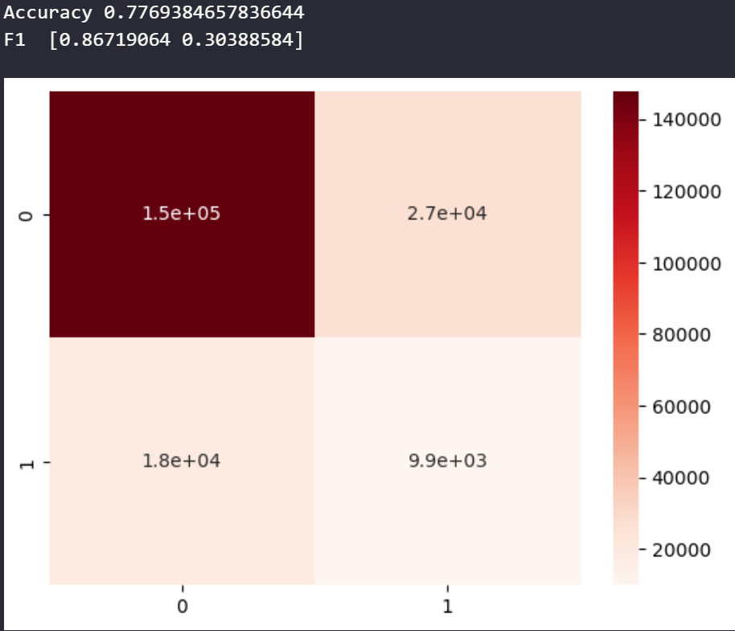
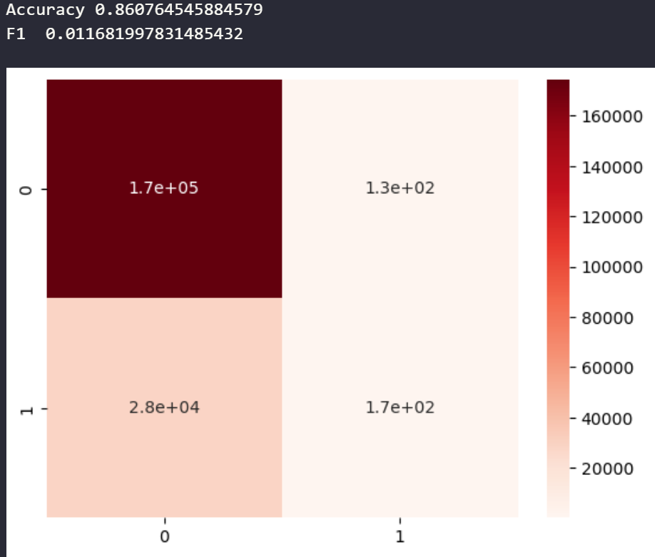

Throughout this course, I've used health-related datasets, such as heart disease and cancer, to try and see how various models could help predict and classify illnesses. I'm continuing that trend here with a diabetes dataset.
Diabetes is a health issue that affects millions of people worldwide; in the United States alone, at least 38 million people have Diabetes, with 98 million having prediabetes. The CDC estimates that 1 in 5 people could have Diabetes and not know it. Diabetes is also the eighth leading cause of death in the United States. Additionally, Diabetes is a growing disease in countries such as the United States, Canada, and India.
So, having a model that can accurately classify if someone is likely to have Diabetes or not can help catch Diabetes early, as catching it early and making lifestyle adjustments can lead to a minimal impact on an individual's life.
There are two main questions I hope to find answers to through this project.
This project aims to look at the diabetes dataset and develop a classifier, initially a Naive Bayes classier, that can accurately classify data into a proper diagnosis and, if needed, go through iterations of the data science pipeline to refine the model and get the highest accuracy score possible.
The dataset comes from Kaggle, which is sourced from a CDC survey in 2015. It contains 21 features and just over 250,000 samples, has information from both health and social aspects, and is labeled with a diagnosis of diabetes (2), pre-diabetes (1), or no diabetes (0).
We will take a deeper look into the data, along with some Visualization in the pre-processing and methodolgy section
Initially, I wanted to use a Naive Bayes classifier to model the data. I chose this model because I wanted to get more hands-on experience implementing a Naive Bayes classifier, and I thought it would be a good choice for this dataset.
The overall steps would be to:
Pre-processing was simple since this was a clean dataset.
As we can see, the data consists entirely of numeric values. When I first checked how many nonnull values were present, I noticed that the number was less than the total samples in the dataset. Indicating the existence of null values
However, the value 0 isn't a null value but rather the value used to show the lack of a feature in the sample, not a missing data point. So, instead, I checked to see if any columns had empty values; using .isna().any() instead, as seen on the leftmost image, no values were missing.
results of diabetes_df.info()
results of diabetes_df.isna().any()
After data cleaning and pre-processing, I wanted to visualize some aspects of the data to help get a better understanding and hopefully answer one of my original questions for this project.
Since the goal is to use Naive Bayes, I wanted to see the distribution of the three classes. Below, you see the distribution on the right - 0 for no diabetes, 1 for prediabetes, and 2 for diabetes. We see here that the dataset is unbalanced leaning heavily towards the class for a negative diabetes diagnosis. At first, I didn't think this would pose a problem. I would later find out that it would, but we will talk about that later.
Next, I wanted to look at how features correlated with each other; given the matrix, we see that all features are around the same range in relation to the target value. The most highly correlated features are general health, physical health, BMI, blood pressure, and cholesterol. The lowest correlated items were what I would classify as social features, such as income and education.
This answers the first question we had. What attributes contribute to a diagnosis of Diabetes the most? Well, in order, it seems that the top 10 correlated attributes are general health, high blood pressure, BMI, difficulty walking, high cholesterol, age, heart attack, physical health, stroke, and mental health.
Knowing the dataset to be unbalanced, I looked into different classifiers to help deal with that. Knowing I wanted to use Naive Bayes, I looked into sci-kit learns documentation pages for their naive Bayes classifiers. There, I found two methods that would work with an unbalanced dataset.
For all models used I did a train test split of 20/80 with a random seed of 42
After spliting the data I fit and predicted for the two classifiers to see which one preformed better
Originally I decided to use accuracy as the scoring metric, with the goal to get the model with the highest accuracy
Of the two Categorical Naive Bayes scored the higher in accuracy. Results for both are below
Categorical Naive Bayes
Multinomial Naive Bayes
Both of these results are not the best, what can we do better?
I wanted to try and get a higher accuracy score for one of the models; however, figuring out how the models were performing based only on accuracy score was difficult, so I added the F1 score as well as the confusion matrix along with it to get a better look at it.
Multinomial & Categorical Naive Bayes both suffered form a low F1 score and when looking at the confusion matrix's we see that both models have a high True Postive rate for the classes.
Categorical Naive Bayes
Multinomial Naive Bayes
I interpreted that the models were having a hard time differentiating between prediabetes and diabetes, so I went back to the pre-processing steps to combine the two classes to improve the scoring metrics.
Thankfully the same source where I got the original dataset, also provided the same dataset with the same samples and features but with just two classes instead, 0 for no diabetes and 1 for diabetes and pre-diabetes
Original Distribution
Combined Distribution
After combinding the dataset and doing the same train test split. I reran the models resulting in the following
Categorical Naive Bayes
Multinomial Naive Bayes
The F1 scores were significantly better. Indicating that the model was originally having issues differentiating between diabetes and prediabetes. Its performing better but still not the best, ideally I wanted a accuracy score of closer to 90%
Let's look back at the data science pipeline. I have the data; it's cleaned, and I've reduced what we can. It may be the Naive Bayes Classifier that is the issue. So, I experimented with a different model to get a higher accuracy score.
I decided to experiment with using a support vector classier to see if it will preform better I chose a SVM due to the following
I used sci-kit learns SVM class to create a classier using a 20/80 train test split I fit and predicted the train data and scored it using the same methods as before
It resulted in the highest accuracy score yet! however still alow F1 score and high True postive rate
Why this might be? we will talk about that in the next section
For now I am satisfied with the models accuracy
SVM Scoring
Through this project, I gained insight into classification models, specifically Naive Bayes classifiers; I went through multiple iterations of the data science pipeline and refined the processes to create a model that can accurately classify diabetes diagnosis.
The project showed what attributes contributed the most to diabetes. It is also possible to create a high-performing model to classify diabetes - granted, you refine the data and take the time to find a model that works best. For this project, it turned out to be a support vector machine, not a Naive Bayes classifier. Answering the two original questions
Every model created for this project was able to score high accuracy but produced a low F1 score, and the confusion matrixes showed a high True Positive rate.
Given this, accuracy was probably not the best metric to go off of initially. I shouldve focused primarily on the F1 score as it considers precision and recall and can provide a more detailed metric than accuracy.
Additionally, the high true positive rate could result from unbalanced data. If I were to go through one more iteration, I would focus more on standardizing the data to try to get a more balanced dataset either by randomly sampling or finding a way to gather more data and seeing if the more balanced dataset performed better when classifying both classes of diabetes and no diabetes and get a better balance of True Positive and True Negative.
There are a few potential impacts of a model that can accurately predict diabetes and know what attributes correlate to diabetes.
As stated at the start of this project, 1 in 5 people could have diabetes and not know it, but having a well-performing model that can accurately classify a diagnosis could help people. Early diagnosis can allow people to make lifestyle adjustments and have a minimal impact on the disease. Additionally, knowing what attributes correlate to diabetes can help people know what to look out for as well as draw educated conclusions on areas that might also contribute to a diagnosis.
However, there is also a major negative impact; by having a model that can classify if someone has diabetes or not, health insurance companies could use this information to raise rates of people they suspect could have a diagnosis of diabetes. Additionally, models like these require a lot of data to train; if the data is not ethically sourced, it could lead to an unfair bias towards certain groups.